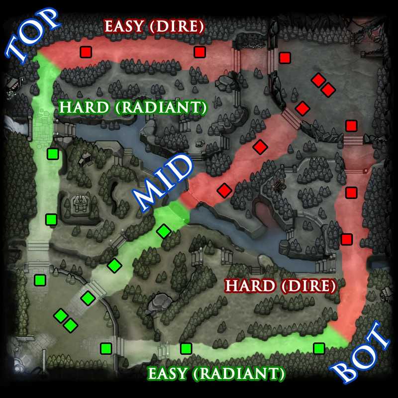

Вітаю на ще одній статті про доту
В цій статті ви дізнаєтесь про всі ролі в доті
У Dota 2 існує 5 основних позицій (ролей), які визначають місце на карті та завдання гравця:
-
Керрі (Pos 1, легка лінія)
-
Мідер (Pos 2, центр)
-
Офлейнер (Pos 3, складна лінія)
-
Часткова підтримка (Pos 4, роумер/офлейн)
-
Повна підтримка (Pos 5, легка лінія)

Яка ціль кожної ролі на лінії
-
Керрі (Position 1 - Safe Lane): Герой, який потребує багато золота та досвіду на початку гри. Його завдання — захистити легку лінію, фармити та стати найсильнішим персонажем у пізній грі.
-
Мідер (Position 2 - Mid Lane): Гравець центральної лінії, який отримує соло-досвід. Має швидко прокачатися, допомогти іншим лініям (ганг) та контролювати руни.
-
Офлейнер (Position 3 - Offlane): Зазвичай міцний герой (танк або ініціатор), який стоїть на складній лінії. Завдання — заважати керрі суперника фармити та ініціювати бійки.
-
Часткова підтримка (Position 4 - Soft Support/Roamer): Саппорт, який має більше свободи, часто пересувається між лініями (роумінг) для створення вбивств, допомагає офлейнеру.
-
Повна підтримка (Position 5 - Hard Support): Саппорт на легкій лінії. Його мета — захищати керрі, купувати варди (огляд карти) та забезпечувати контроль.